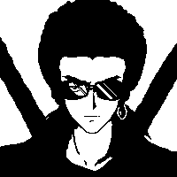

Neptune Ringgs
Date of birth: 26 August
Place of birth: Earth
Blood type: A+
Planet: Neptune
Other: The young one is V.S and the older is the king of planet Neptune
Meet Neptune Ringgs
Neptune is the Molly's father and Ice's husband. His past is not clear but he joined V.S when he was much younger.
His life changed when he met Kisoko, but it changed even more when he met Molly for the first time. Before that, he hadn't any particular reason to live for.
Physical/other description
He has a tied long hair and he usually wears medical glasses, strong and is stubborn. (See: slender madness)
Other
Neptune is hated by gangs because of his cruel nature, they even like Kisoko instead because of his serenity and calmness. He (Neptune) has a brother in the other side of the earth, and is more reckless and scarier than him.
Days come and go and he discovers that he is the king of another planet and his partner in a god like woman. And in spite of everything he is the true friend